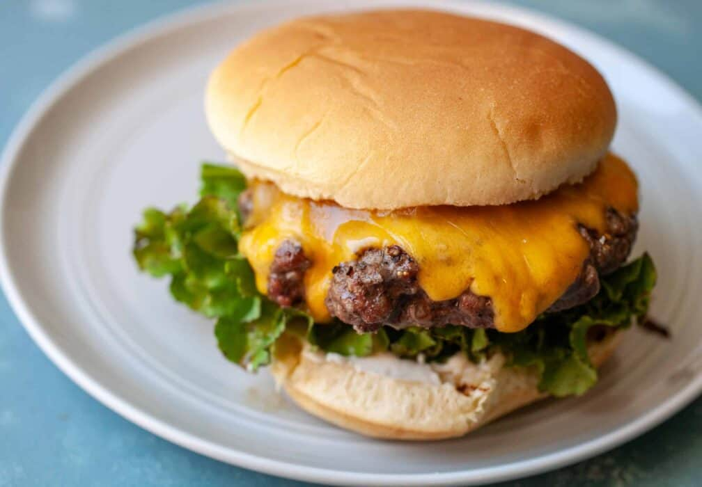

Ghost Pepper Burger

It's getting hot in here! But please, for your own safety, keep your clothes on.
You've had jalapenos, or for the bold, habeneros. But let's kick it up a notch.
The Ghost Pepper Burger is hot. For true heat lovers, this is one for you.
Remember, this recipe is a Recipe for Disaster. There will be negative consequences if you do not read this carefully beforehand.
Ingredients
- 2 pounds ground beef
- 1 tablespoon onion powder
- 1 teaspoon salt
- 1 teaspoon freshly ground black pepper
- 1/2 teaspoon ground ghost pepper (bhut jolokia)
- slices of your cheese of choice (enough for 6 burgers)
- 6 large burger buns
Steps
- In a large bowl, mix onion powder, salt, black pepper, and ghost pepper until combined.
- Add ground beef and mix the spices into the meat.
- Divide the meat into six balls and form them into patties. Press together any cracks to avoid pieces breaking off while grilling.
- Preheat your grill to a high heat and add the patties. Close or cover with the lid.
- Flip when the top of the patties begin to turn to a slight shade of brown.
- Add cheese and cook for another 2-3 minutes.
- Remove patties from the grill to a plate. After a couple of minutes, transfer the patties to buns.
- Add your favorite toppings and enjoy the heat!
- For extra heat, touch your eye and face. Feel that burn? My god, why won't it stop? The tears...
Don't want to see the world burn?
Oh, wait, the fire is in your eyes. The world is fine.
Handling peppers, or foods, with high levels of capsicum requires thorough handwashing.
When forming patties, wash your hands with plenty of soap and hot water to remove all traces of pepper. Alternatively, wear gloves.
Also, burgers can be messy. Probably some grease or condiments got onto your hands with some ghostr pepper mixed in. Don't touch your face while eating and wash afterwards.
Back to Home